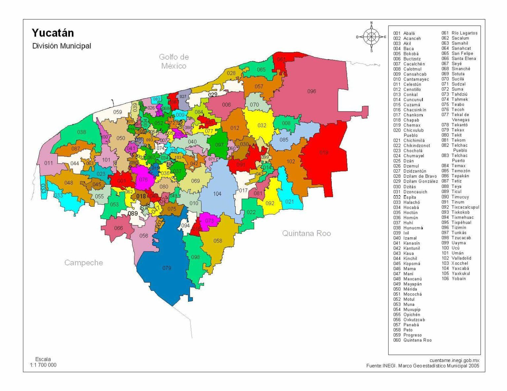

Programación Web I PRIM25
Evaluación práctica Parcial 1
Profesora: M.C Imelda Deyanira Hernández Martínez
Alumno: Vanessa Yazmin Gallegos Martínez
Visita Yucatán

Universidad Politécnica de San Luis Potosí.
Urbano Villalón 500.
Col. La Ladrillera.
San Luis Potosí, S. L. P.